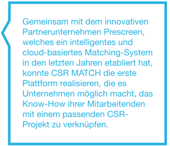

Corporate Social Responsibility der Zukunft.
CSR MATCH hilft Unternehmen gesellschaftliche Verantwortung zu leben. Durch kluge Organisationsanalyse und aktive Förderung des sozialen Engagements der Mitarbeitenden.
Unsere Erfahrung zeigt, dass Social Business, NGO’s und gemeinnützige Organisationen (CSR- Projekte) die engagierte Menschen suchen, sowie Engagementwillige die gerne eine Stelle besetzen würden, oft nicht sinnvoll zusammen kommen oder Fehlbesetzungen die Folge sind. CSR MATCH hilft, den passgenauen Matching-Partner zu finden.
